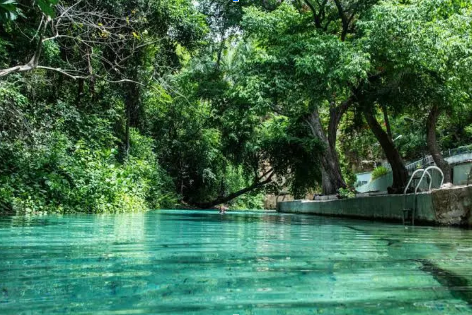

Take out time for some R&R
Visit the Yankari Game Reserve!
Yankari Game Reserve is where Nigeria lets its wild side run free with elephants crossing like they own the road and antelopes doing runway walks through the savanna. But the crown jewel? Wikki Warm Spring. It’s basically Mother Nature’s jacuzzi, always a perfect 31°C and so clear that you can see your toes. Take a dip and pretend you’re starring in a luxury travel ad… without the bill.
Book Now More InfoMore Breathtaking Sights
Obudu Cattle Ranch is Nigeria’s highland escape, sitting pretty on the rolling hills of Cross River State. Think fresh mountain air, green pastures that look straight out of a postcard, and views that make you forget your phone has signal. The cable car ride alone feels like a flying safari, gliding over valleys and clouds
Olumo Rock is Nigeria’s original skyscraper. Once a fortress for the Egba people during wars, today it’s where you climb, pose, and pretend you’re on top of the world (or at least Ogun State). The steps and tunnels carved into the rock tell stories of history, but the real reward is the view at the top. Breathtaking.
From warm springs to cool hills and ancient rocks, Nigeria’s adventures prove one thing; boring is not on the map.